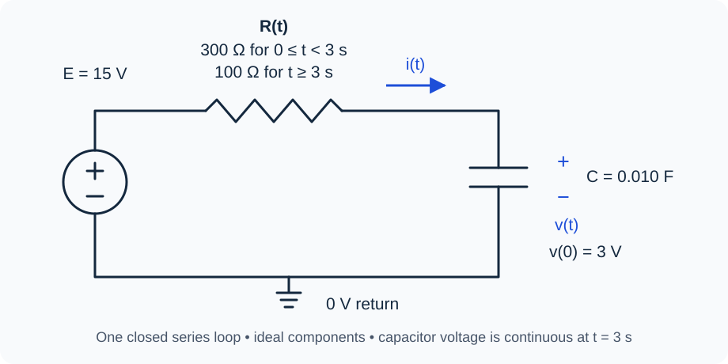

Course practice / Batch 06 / 2026-10-11 PDT
MTH 256
一阶微分方程
First-order differential equations · 初值验证、方向场、分离变量、积分因子，以及冷却、指数衰减、逻辑斯蒂增长、双入口混合与分段 RC
The same initial value is only one test
Consider \(y^{\prime}+y=2t+2\), with \(y(0)=1\), and the candidate functions \(u(t)=2t+e^{-t}\) and \(w(t)=2t+e^{-2t}\). Both t and y are dimensionless.
- Identify the independent variable, dependent variable, order, and whether the equation is linear in y.
- Find \(u^{\prime}\) and \(w^{\prime}\). Substitute each candidate into the differential equation and determine which satisfies it for every real t.
- Check the initial value for both candidates. Which candidate solves the complete IVP?
- Use the differential equation and initial value to find the required value of \(y^{\prime}(0)\). Compare it with the initial slope of each candidate.
中文提示（不含解答）
初值只是某一点的数值条件；验证解还要把函数及其导数代入微分方程，逐项比较。
Slopes that relax toward a middle level
For \(y^{\prime}=3-2y\), both t and y are dimensionless. Use t on the horizontal axis and y on the vertical axis.
- Compute the slopes at all nine points with \(t\in\{0,2,4\}\) and \(y\in\{0,1.5,3\}\), then sketch a short line segment at each point.
- Find the constant equilibrium solution. Explain why the slopes repeat at different times when y is fixed.
- Use slope signs to describe the direction of motion below and above the equilibrium. Is the equilibrium attracting or repelling?
- For a solution starting at y(0) = 3, compare the slope initially with the slope when the solution is at y = 2. Does its downward motion become steeper or less steep as it approaches equilibrium? No explicit solution is required.
中文提示（不含解答）
同一水平线上的斜率只需计算一次；比较“更陡”时看斜率的绝对值，同时保留正负号。
A separable approach with a changing rate
Solve \(y^{\prime}=2t(4-y)\), \(y(0)=1\), for \(t\ge0\). Both variables are dimensionless.
- Check for a constant solution before dividing by a factor containing y. Separate variables and solve the IVP.
- Verify your solution by differentiation and check the initial value. Find y(1) to three decimals.
- Decide whether the solution increases or decreases for t > 0, and find its limiting value. Does it reach that value at a finite time?
- Find the first nonnegative time when y = 3.7, exactly and to three decimals.
中文提示（不含解答）
分离时先记下被除掉的因子为零时会发生什么；取对数后用初值确定常数，最后再解出目标时间。
Two initial values under the same forcing
On \(t\ge0\), consider \(y^{\prime}+y/(t+1)=3(t+1)\), with \(y(0)=2\). Both variables are dimensionless.
- Find an integrating factor and show the resulting product-derivative equation.
- Solve the IVP, verify the differential equation and initial condition, and find y(1).
- A second solution u obeys the same equation but has \(u(0)=5\). Find u(t), or first find the difference \(d(t)=u(t)-y(t)\).
- Find the limit of u(t) − y(t) as t tends to infinity. Do the two solutions themselves have finite limits? Explain using the formulas.
中文提示（不含解答）
标准形式中的系数决定积分因子；比较两个解时，可以把两条方程相减，先研究差值。
A rising input and an early minimum
Solve \(y^{\prime}+2y=4t\), \(y(0)=3\), for \(t\ge0\). Both variables are dimensionless.
- Find an integrating factor, show the product-derivative equation, and solve the IVP.
- Check the differential equation and initial value. Find the initial rate of change.
- Find the time and value of the minimum for t ≥ 0, exactly and to three decimals. Use the sign of the derivative to justify that it is a minimum.
- Write the solution as a straight-line term plus a term that tends to zero. Find the difference between y(t) and that straight line at t = 2, to three decimals.
中文提示（不含解答）
先用积分因子解出函数，再求导判断极值；右端随时间上升，并不表示解一开始也必须上升。
Two warm samples in the same room
Two separate samples are placed in a room held at 18 °C. Sample A starts at 78 °C and sample B at 48 °C. Each follows Newton’s model \(T^{\prime}=-0.10(T-18)\), with t in minutes and 0.10 in min\(^{-1}\). The samples do not exchange heat with one another. Use the model for \(t\ge0\).
- Write and solve an IVP for each temperature, T_A(t) and T_B(t).
- Find both initial cooling rates, with units, and both temperatures after 10 minutes, to two decimals.
- Find when sample A is first exactly 5 °C warmer than sample B, exactly and to two decimals.
- Will the samples have exactly equal temperatures at any finite time? Find both limiting temperatures and justify your answer from the temperature-difference formula.
中文提示（不含解答）
两杯样品分别满足各自初值；把两个温度公式相减，常数室温项会消去。
Following a fading dye
In an idealized light-exposure experiment, M(t) is the mass of unbleached dye remaining, in mg, after t hours. Bleached products are not counted in M. Assume \(M^{\prime}=-kM\), with an unknown constant \(k>0\). Initially M(0) = 80 mg, and after 3 hours M(3) = 50 mg. Assume the model is valid for all requested times.
- Solve the IVP in terms of k, then find k exactly and to four decimals, with units.
- Find M(6). Compare the mass of dye bleached during the first three hours with the mass bleached during the next three hours, in mg. Explain why the two losses are not equal.
- Find the half-life and the first time when 10 mg remains. Give exact expressions and numerical values to two decimals, in hours.
- Find the initial rate of change, to two decimals with units. Does this idealized model ever predict exactly zero unbleached dye at a finite time?
中文提示（不含解答）
相同时间间隔对应相同比例的剩余量，而不是相同的减少量；求时间时先把指数项单独留在等式一边。
A head start in the same logistic environment
Two separate cultures follow the same logistic equation \(N^{\prime}=0.20N(1-N/1000)\), where t is in days and N is measured in organisms. The coefficient 0.20 has units day\(^{-1}\), and the carrying capacity is 1000 organisms. Let P(0) = 100 and Q(0) = 200 for the two cultures. Treat both populations as continuous and use the model for \(t\ge0\).
- Find the nonnegative equilibria and classify them using the signs of the growth rate.
- Solve for P(t) and Q(t) by separation, and check both initial counts.
- Find when each culture first reaches 500 organisms. How many days earlier does Q reach this count? Give exact expressions and numerical values to two decimals.
- Does Q(t) remain greater than P(t) at every finite nonnegative time? Compare their explicit formulas and find both long-term limits.
中文提示（不含解答）
两个培养物使用同样的增长参数，初值只会改变解中的常数；比较数量时可以先比较两个正分母。
Two inlets feeding one well-mixed tank
A tank initially contains 90 L of liquid with 0.90 kg of dissolved salt. Inlet A supplies 2 L/min at 0.060 kg/L; inlet B supplies 1 L/min at 0.150 kg/L. A single outlet removes perfectly mixed liquid at 3 L/min. All rates remain constant. Assume perfect mixing, no evaporation, and no other losses. Let S(t) be salt mass in kg, C(t) its concentration in kg/L, and t time in minutes, for \(t\ge0\).
- Find the volume. Calculate the salt-entry rate from each inlet, including units, then set up the IVP for S(t).
- Solve for S(t) and C(t), and check the initial conditions.
- Find the first time C(t) reaches 0.050 kg/L, exactly and to two decimals.
- Find S(20), to three decimals. Use overall salt conservation to find the total salt removed during the first 20 minutes, also to three decimals. Show a mass-balance check.
- Find the limiting concentration. Explain why it is a flow-weighted average of the two inlet concentrations rather than their ordinary arithmetic average.
中文提示（不含解答）
先把每个入口的“体积流率 × 浓度”相加，再写流出项；整个过程的总量守恒可以用于核对答案。
Change the resistance while the capacitor charges
The circuit shown is one series loop containing an ideal constant 15 V source, an adjustable resistor, and a capacitor \(C=0.010\) F. For \(0\le t<3\) s, \(R=300\) Ω; at t = 3 s it changes instantly to 100 Ω and stays there. The loop is never opened. The capacitor voltage v(t), in volts, is positive at its upper plate and begins at v(0) = 3 V. Current i(t), in amperes, is positive into that plate. The source polarity gives \(Ri+v=15\). Assume ideal components and continuous capacitor voltage at the resistance change. Use t in seconds; solve the DE within each stage and use one-sided currents at t = 3.
- Write and solve the IVP for v(t) in both time intervals, matching the voltage at t = 3.
- Find the time constant in each stage and the initial current, in mA.
- Find v(3), \(i(3^-)\), and \(i(3^+)\). Give voltage to three decimals and currents in mA to two decimals. Explain why the current changes while capacitor voltage remains continuous.
- Find the first time the capacitor voltage reaches 12 V, exactly and to three decimals. Check which stage contains that time. Find the capacitor charge then and its limiting charge, in coulombs.

中文提示（不含解答）
更换电阻会改变时间常数；第二阶段要从切换时已有的电压继续，不能把初始电压重新设为零。